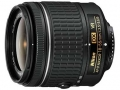

这是一款约3倍标准变焦镜头，覆盖18-55mm焦距范围。是首款用于尼康数码单反相机的“AF-P”镜头，利用步进马达驱动AF功能实现快速安静的自动对焦。此外还采用可伸缩镜筒，使机身紧凑轻巧，携带方便。采用两枚非球面镜片实现良好的光学性能，有效抑制包括失真和球面像差在内的多种像差。VR减震装置提供相当于提升约4.0档快门速度。
成像好，轻便，步进电机，造型明显好于以前的小手雷。
用过一代、二代防抖头，这个明显成像好，尤其是35端画质没有下降，不像二代的35mm不能用
没明显缺点。镜头锁不习惯，算一个？